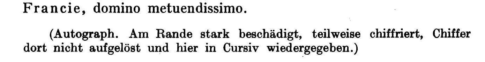
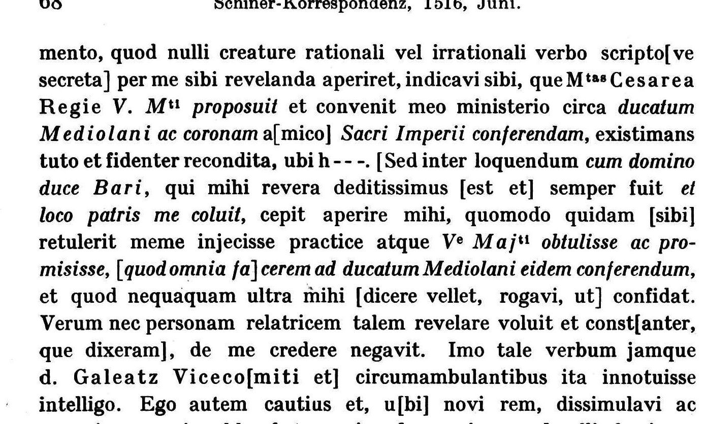

At a glanceDeciphered in print, 1925 · 14 cipher passages, 88 words
- The letter
- Matthäus Schiner, cardinal of Sion, to Henry VIII, in his own hand, Trent, 14 June 1516: four pages of Latin with words and phrases in cipher.
- Where
- British Library, Cotton MS Vitellius B XIX, f. 131 in the old foliation that Letters and Papers and Büchi cite, f. 129 in the Library’s current catalogue. Burnt at the edges in the Cotton fire of 1731 and not digitised. Catalogue entry 290 here.
- The cipher
- Fourteen stretches, from one word to a 28-word sentence, set into clear Latin, with a monogram for Vestrae Majestati. The signs themselves are unknown here: the leaf is not online and no key was ever printed.
- How it was deciphered
- By Albert Büchi and Traugott Schiess, who rebuilt the keys of Schiner’s correspondence and printed this letter as no. 541 of Korrespondenzen und Akten II (Basel 1925), the deciphered words in italics.
- What it says
- That Maximilian had proposed to Henry, through Schiner, the duchy of Milan and the crown of the Holy Roman Empire. Schiner had told the secret only to Henry’s envoy, and now the Duke of Bari and Galeazzo Visconti were repeating it.
- Still open
- A check of Büchi’s decipherment sign by sign, and the key. Both need the leaf. Four words in the burnt margin are Büchi’s conjectures.
- Credit
- The decipherment is Büchi’s and Schiess’s (1925). Brewer’s Letters and Papers (1864) had already given six of the fourteen passages.
01 The letter
In the spring of 1516 Henry VIII was paying for Maximilian’s campaign to win back Milan from Francis I, and Cardinal Matthäus Schiner, bishop of Sion, led the Swiss who fought for it. The campaign failed. The Swiss mutinied at Bergamo for want of pay, Brescia surrendered to the French and Venetians on 23 May, and the English envoys Richard Pace and Sir Robert Wingfield blamed each other, Galeazzo Visconti and Schiner. In the middle of it Maximilian made Henry an extraordinary offer: the duchy of Milan, and the succession to the Empire itself.
On 14 June, three days after reaching Verona, Schiner answered a letter of Henry’s from London of 8 May. He wrote it himself, four pages of dense Latin, and put the dangerous words into cipher. The letter is in the Cotton library, in a volume the fire of 1731 burnt at the edges, so every line has lost its ends.
J. S. Brewer calendared it in 1864 as Letters and Papers II no. 2044, with a Latin extract full of gaps and the note “partly in cipher, not deciphered … Sense obscure.” The project’s catalogue took that at its word and listed the letter as not deciphered.
02 Büchi and Schiess, 1925
Albert Büchi, professor at Fribourg, collected Schiner’s correspondence for the Quellen zur Schweizer Geschichte. His second volume (Basel 1925, 1516–1527) prints the letter in full as no. 541, pp. 67–72. At the end he says where the cipher went:

His preface explains how. Twenty-nine letters of the volume are partly in cipher, most of them with the decipherment written over the lines, but seven had none. “Keys to them were found nowhere, and had first to be reconstructed.” He did it with the help of Traugott Schiess, the volume’s editor, and they recovered the keys of all but a single letter (no. 582). He names five kinds of cipher, used by Schiner and his agents “above all in dealings with England”. He printed no key and no facsimile.
The letter was found by working through the sources that catalogue entry 290 had not checked. There is no DECODE record, and the British Library record says “Digitised Content: No”. Tomokiyo’s cryptiana item on Schiner is a different letter of 1520. HathiTrust holds Büchi’s volumes behind a bot check, but the Swiss National Library has both on e-Helvetica with a text layer. The text layer drops the italics, so the cipher passages were marked from the page images.
03 What the cipher says
Büchi’s italics mark fourteen passages, 88 words in all, on pp. 67, 68 and 70. They are words and phrases set into clear Latin. Some are chosen for secrecy, and some seem to be ciphered for the practice of it.

| # | In cipher (Büchi) | English |
|---|---|---|
| 1–4 | litteris video moleste ferre, quod nec … nec … doleo; sed summis Mtem … [hujus]modi expende]re | From your letters I see you take it ill that I sent Your Majesty neither news nor anything else. I regret it, but beg Your Majesty to weigh the cause of the neglect. |
| 5 | campum dirigendis | since I left the Val di Sole for the Emperor’s camp, to direct the armies |
| 6–8 | V. Mti proposuit … ducatum Mediolani ac coronam … Sacri Imperii conferendam | I told [the agent, under oath] what the Emperor had proposed to Your Majesty through me: the duchy of Milan, and the crown of the Holy Empire, to be conferred [on him] |
| 9–10 | cum domino duce Bari … et loco patris me coluit | but in talk with the lord Duke of Bari, who is most devoted to me and has honoured me as a father |
| 11 | Ve Majti obtulisse ac promisisse, [quod omnia fa]cerem ad ducatum Mediolani eidem conferendum | [he said someone had told him] that I had offered and promised Your Majesty to do everything to have the duchy of Milan conferred on you |
| 12 | prius ducatum Mediolani sibi usurparat, inde [regi Catholico], quo gubernator in eo fieret, obtulit, et eundem regem Catholicum pro ejus nepote recusare ajunt, et V. Majti obtulisse dicitur | [Galeazzo, double as ever,] first took the duchy of Milan for himself, then offered it to the Catholic King on condition of being its governor; they say the Catholic King refused it for his grandson, and he is said to have offered it to Your Majesty |
| 13 | nequeant letis oculis nec hillari conspicere vultu | [men] cannot look with glad eyes or a cheerful face [on those they hate] |
| 14 | quod aliter quam recte succedere curarunt (!) | [the business,] which they saw to it went other than right |

Every one of the 88 words has a decipherment in Büchi’s text. 84 of them stand on surviving cipher. The other four, [quod omnia] and [regi Catholico], fall in the burnt margin and are Büchi’s conjectures, and two more words are partly restored. The rest of the letter is clear Latin: Schiner’s defence against the men who blackened him to Henry, the welcome he says the Swiss gave him at Bergamo, the fall of Brescia, the lack of a month’s pay, and his view of the peace Wolsey had raised.
04 Letters and Papers and the 1516 abstract
“Not deciphered” was never quite true. Brewer’s extract gives the words of passages 7 to 12: the duchy of Milan, the crown of the Empire, the Duke of Bari (“corrected from Mediolani”, his note says), and Galeazzo’s dealings. His footnote identifies “a monogram in cipher” for Vestrae Majestati inside passages 11 and 12. His marginal summary is the secret itself: “Maximilian’s offer of the Empire and duchy of Milan to Henry is known to Galeazzo and others.” What he left out are passages 1 to 6, 13 and 14. Without the leaf there is no telling whether the passages he gives were lightly disguised or whether he worked them out.
The next leaf of the volume (L&P II 2045, Büchi no. 542) shows that London understood the letter in 1516. It is an abstract made in England of “the letters of the Cardinal of Sion, 14 June, from Trent”. It opens with his complaint that the Duke of Bari “knew everything”, as if he had read the instructions, and that Schiner believed Pace had told him. It then argues that the Roman Empire and the duchy of Milan were neither impossible nor unbecoming for the King. That is the ciphered content of the letter, summarised by its first readers, and it bears out Büchi’s passages 7 to 12.
05 What remains open
- A check of Büchi against the cipher. Cotton Vitellius B XIX is not digitised, so his decipherment could not be compared sign by sign with the leaf (blocker: needs an image of f. 129, old f. 131, from the British Library).
- Four words in the burnt margin, quod omnia and regi Catholico, and parts of two others, are Büchi’s conjectures (blocker: the paper was lost in 1731).
- The key. Büchi and Schiess never printed it. It could be rebuilt from the leaf against their text, or from Schiner’s letter to Wolsey of 5 December 1516 in the same volume (f. 342, Büchi no. 585), which carries a decipherment over the lines (blocker: needs images).
06 Sources
- A. Büchi (ed.), Korrespondenzen und Akten zur Geschichte des Kardinals Matth. Schiner, vol. II (1516–1527), Basel 1925 (Quellen zur Schweizer Geschichte, Neue Folge III/6): preface pp. VIII–IX; no. 541, pp. 67–72; no. 542, pp. 72–79. Scan on e-Helvetica (Swiss National Library, nbdig-59316).
- J. S. Brewer (ed.), Letters and Papers, Foreign and Domestic, Henry VIII, vol. II (1864), nos. 2044–2045, British History Online.
- British Library, Cotton MS Vitellius B XIX, catalogue record 040-001102999, items 57–58 (ff. 129–131).
- S. Tomokiyo, Cryptiana, “A Letter to Cardinal Schiner (1520)”: a different letter and cipher, solved by G. Nicollier, M. Jacquemet and G. Evéquoz.
The full text with the cipher passages marked, the list of passages and the profile are in schiner1516/.